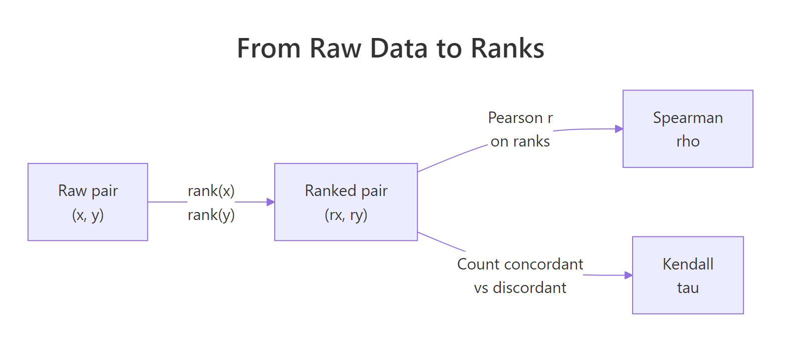
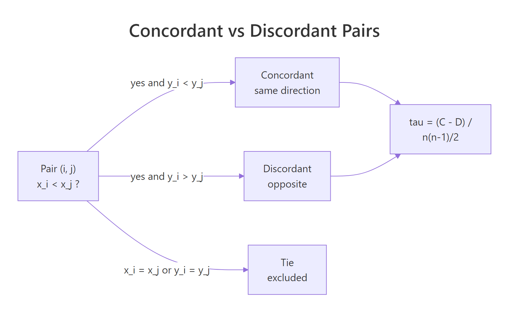
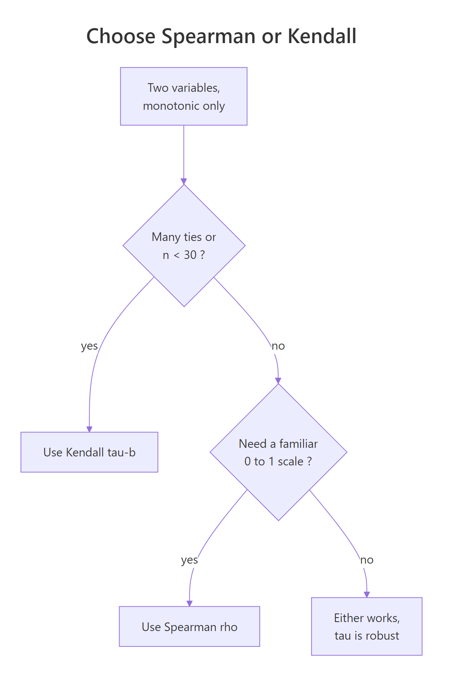

Spearman & Kendall Correlation in R: Rank-Based Association Measures
Spearman's rho and Kendall's tau measure how strongly two variables move together using ranks instead of raw values, which keeps them honest on non-normal data, ordinal scores, and outlier-prone columns that would corrupt Pearson's r. Both methods run in one line with cor.test(), but they answer slightly different questions, and they disagree in informative ways.
How does cor.test() compute Spearman and Kendall in R?
When cor() returns the wrong answer, it's almost always because the relationship is monotonic but curved, the data is ordinal, or one outlier is dominating the result. Spearman and Kendall fix that by ranking the numbers first, then measuring agreement on those ranks. Let's compute all three flavours of correlation on a small synthetic dataset where the relationship is strictly monotonic but nonlinear, so the difference becomes visible immediately.
Pearson sees a strong but imperfect link because the cloud isn't a straight line. Spearman and Kendall both return exactly 1.0 because the ranks of y are in perfect lockstep with the ranks of x. That difference is the entire reason rank-based correlation exists: when only the ordering matters, raw values mislead you and ranks tell the truth.
The single-number cor() call is convenient, but cor.test() is what you should actually run on real data. It returns the coefficient plus a p-value and a hypothesis-test framework around it.
The output object holds the estimate (st_spear$estimate), the test statistic (st_spear$statistic, here Spearman's S), and the p-value. Notice the test object has no conf.int field for rank methods, only Pearson gets one out of the box. We will fix that with a bootstrap in a later section.
method as a string, not a symbol. Both cor() and cor.test() need method = "spearman" or method = "kendall" in quotes. Forget the quotes and R will look for an object named spearman and throw an error.Try it: Generate a perfectly monotonic but cubic relationship and confirm that Spearman returns exactly 1 while Pearson does not.
Click to reveal solution
Explanation: The cubic transform preserves rank order perfectly, so Spearman is 1. Pearson scores the linear fit and falls short because a cubic curve isn't a straight line.
What do ranks do to your data?
Both methods start with the same step: replace each value with its position in the sorted order. R's rank() function does this, ties get the average position. Once you have ranks, distribution shape and outlier magnitude no longer matter, only the ordering does.
The first row had Sepal.Length = 5.1, which is the 39th smallest value in the column (with ties broken by averaging). The numbers 5.1 and 39.0 carry the same information about ordering, but 39.0 is bounded between 1 and length(iris_sl) and is invariant to any monotonic transformation of the original data.

Figure 1: From a raw (x, y) pair, both methods compute ranks; Spearman then runs a Pearson correlation on those ranks while Kendall counts pairwise agreement.
That's not a metaphor, it's the literal definition. cor(x, y, method = "spearman") is cor(rank(x), rank(y)). If you've ever wondered why Spearman feels like "Pearson but robust", that's why.
Both routes give exactly 0.8718. Inside cor(), R computes Pearson against the rank vectors when you pass method = "spearman", and that's the entire algorithm. The robustness people talk about is just the rank step, the rest is plain Pearson arithmetic.
rank() and you have a Spearman correlation. This single sentence explains every property of rho: outlier resistance, scale invariance, monotonic-only sensitivity. Once raw values become ranks, any further outliers or scale tricks are invisible to the calculation.Try it: Verify the same identity on mtcars$mpg and mtcars$wt.
Click to reveal solution
Explanation: Heavier cars rank lower in mpg with very few exceptions, so the rank correlation is strongly negative. The two routes agree because they are the same calculation.
How is Kendall's tau actually counted?
Kendall takes a different path. Instead of running Pearson on ranks, it walks every possible pair of observations and asks one yes-or-no question: do they move in the same direction?
A pair of observations $(i, j)$ is concordant if both $x_i < x_j$ and $y_i < y_j$ (or both reversed). It is discordant if one variable goes up while the other goes down. Pairs tied on either variable are excluded from the count.

Figure 2: Each pair of observations is concordant, discordant, or tied. Kendall's tau is the net agreement scaled by total pairs.
The basic formula (Kendall's tau-a) collects those counts:
$$\tau_a = \frac{C - D}{\binom{n}{2}}$$
Where:
- $C$ = number of concordant pairs
- $D$ = number of discordant pairs
- $\binom{n}{2} = n(n-1)/2$ = total number of pairs
Let's count pairs by hand on a tiny dataset and confirm cor() gives the same answer.
The 6-point dataset has $\binom{6}{2} = 15$ pairs total. Twelve agree on direction, three disagree, none are tied. The hand-rolled tau and cor()'s answer agree at 0.60. Read tau as a probability statement: of every 100 random pairs, 80 agree and 20 disagree, the net surplus is 60% of pairs, hence tau = 0.60.
Try it: Flip one of the toy_y values so an extra pair becomes discordant, then recompute tau.
Click to reveal solution
Explanation: Setting ex_y[6] <- 1 flips the last point from the highest rank to a tied lowest rank. Most of the pairs involving that point become discordant or tied, and tau collapses from 0.6 to roughly zero.
How do ties change rho and tau?
Real data has ties. Survey scores repeat, body counts come in whole numbers, sensors hit floor and ceiling values. Ties matter because the basic tau formula assumed no ties existed, and the basic rank formula assumed every observation got a unique rank.
cor.test(method = "kendall") fixes the tie problem with tau-b, which divides by an adjusted denominator so the maximum value is still ±1 even when many ties exist. R does this for you. The cost is that the exact p-value formula no longer applies, so you'll see a warning.
The reported tau = 0.9636 is tau-b, ties-corrected. The warning is not an error, R has fallen back to the asymptotic (large-sample) z approximation because the exact permutation distribution can't handle ties. For comparison, here's the uncorrected tau-a, which uses the unadjusted denominator $n(n-1)/2$ and is dragged below tau-b by the ties.
Tau-a is 0.929, tau-b is 0.964, and cor() returns 0.964. R uses tau-b. Tau-a understates the strength because the three tied pairs sit in the denominator but contribute zero to the numerator. Tau-b removes them from the denominator too, which is why it can still hit ±1 on tied data.
cor.test() returns tau-b. Tau-a uses the basic n(n-1)/2 denominator. Tau-c is for rectangular tables where the two variables have very different numbers of unique values (rare in practice). For pairs of numeric or ordinal variables of the same length, tau-b is the right default.Try it: Compare Kendall on mtcars$cyl vs mtcars$mpg (heavy ties in cyl, only three unique values) against mtcars$wt vs mtcars$mpg (almost no ties). You should see one warning and one quiet call.
Click to reveal solution
Explanation: The first call triggers the ties warning because cyl only takes three values. The second call runs without a warning because wt is continuous. Both estimates are valid, just computed via different p-value paths.
How do you test significance and get a confidence interval?
For Pearson correlation, cor.test() returns a Fisher's-z confidence interval for free. For Spearman and Kendall it does not, and that is a real gap many tutorials skip. The fix is a bootstrap.
First the part cor.test() does give you, the p-value:
Reading the test: rho = -0.895, so as horsepower goes up, mpg ranks fall sharply. The p-value is 5e-12, so there's no realistic chance this association is noise. But there's no confidence-interval line, only the point estimate.
A percentile bootstrap fixes that. Resample row indices with replacement, recompute rho on each sample, then take the 2.5% and 97.5% quantiles.
Two thousand resamples is enough for a stable 95% percentile CI. The interval is (-0.95, -0.81), which excludes zero by a wide margin and matches the picosmall p-value's verdict. Now you can publish a sentence like "rho = -0.89 (95% bootstrap CI [-0.95, -0.81])" instead of just an estimate.
1/sqrt(B), so doubling B only narrows the simulation noise by 30%. Save the heavy budget for the final figure, prototype with 1000.Try it: Repeat the bootstrap for Kendall's tau on the same pair. One word changes.
Click to reveal solution
Explanation: Only method = "spearman" changed to "kendall". Notice the tau estimate (-0.74) is smaller in magnitude than rho (-0.89) on the same data, that's expected and we'll explain why next.
When should you choose Spearman over Kendall?
Most tutorials show you both methods and stop there. Here is the rubric I actually use, plus the magnitude trap that catches everyone the first time.

Figure 3: A short decision tree for choosing between Kendall's tau and Spearman's rho.
The decision usually comes down to four factors:
| Factor | Prefer Kendall (tau-b) | Prefer Spearman (rho) |
|---|---|---|
| Sample size | Small (n < 30) | Larger samples |
| Ties | Heavy ties, ordinal scales | Mostly continuous |
| Interpretation | Probability of agreement on a pair | Familiar 0–1 strength scale |
| Robustness | Less sensitive to a single observation flip | Slightly more sensitive |
Kendall's tau is the more "robust" of the two in a precise sense: a single flipped observation moves tau by less than it moves rho, because tau aggregates over many pairwise comparisons rather than one big rank vector. That makes it the safer default for small samples. Spearman wins on familiarity, most readers know that 0.7 is a strong correlation, fewer have a feel for tau = 0.5.
The trap is comparing magnitudes. Tau and rho are not on the same scale.
On the same dataset, Kendall's tau is always smaller in magnitude than Spearman's rho, with a ratio that hovers around 0.7 to 0.85 for typical bivariate-normal-ish data. The reason is structural: tau is a probability difference (concordant minus discordant fraction), while rho is a Pearson coefficient on ranks, and those scales just aren't equivalent. For bivariate normal data the relationship is approximately $\tau \approx (2/\pi) \arcsin(\rho)$.
Try it: Compute both on airquality$Temp and airquality$Ozone. Confirm |tau| < |rho| and watch out for the missing values.
Click to reveal solution
Explanation: na.omit is essential because both columns have missing values; otherwise cor() returns NA. The ratio tau/rho is about 0.76, in the expected band.
Practice Exercises
The exercises below run in the same WebR session as the tutorial code, so use distinct variable names (my_*) to keep your work isolated.
Exercise 1: Rank a correlation matrix
From the four numeric columns of iris, compute every pairwise Spearman correlation, drop the self-correlations, and sort the unique pairs by descending absolute strength. Save the result to my_pairs.
Click to reveal solution
Explanation: cor() returns a square matrix; as.data.frame.table flattens it. The string-comparison filter keeps only the upper triangle so each pair appears once. order(-abs(rho)) sorts by strength regardless of sign.
Exercise 2: Bootstrap CI for Kendall's tau
Build a 95% percentile bootstrap CI for Kendall's tau between mpg and hp in mtcars with 2000 resamples. Use set.seed(404) and store the lower and upper bounds in my_ci.
Click to reveal solution
Explanation: The bootstrap mirrors the in-text example, only "spearman" becomes "kendall" and the seed changes. The CI excludes zero, confirming the negative association is real.
Exercise 3: Pick a method on tied data
You want to correlate mtcars$cyl (only 4, 6, 8) with mtcars$gear (only 3, 4, 5). Compute both Spearman's rho and Kendall's tau-b with their cor.test() p-values, then justify which estimate you would report. Save the chosen value to my_choice.
Click to reveal solution
Explanation: Both methods warn about ties because each variable has only three unique values, but tau-b's denominator is built to absorb ties cleanly. Kendall is the safer report on data this lumpy. Spearman's rank-averaging trick still works, but its denominator was derived for unique ranks, so the magnitude is harder to defend in a small-N tied-data context.
Complete Example
Here is the full rank-based correlation workflow on a real dataset, end to end. We'll quantify the link between daily temperature and ozone in airquality, handle missing values, run both methods, and produce a publication-style sentence with a bootstrap CI.
The Pearson coefficient (0.70) understates the relationship because Ozone is right-skewed with several extreme values. Spearman's rho lifts to 0.77 once ranks neutralise the skew, and the bootstrap CI of (0.67, 0.85) confirms a strong, well-determined positive association. Kendall's tau is 0.59, smaller in magnitude as expected, with the same directional verdict.
Summary
| Concept | What to remember |
|---|---|
| When to use rank correlation | Monotonic but nonlinear, ordinal data, or outlier-prone variables |
| Spearman's rho | Pearson correlation computed on rank(x) and rank(y) |
| Kendall's tau | (concordant − discordant) / total pairs, ties-corrected as tau-b |
cor.test() returns |
Coefficient, test statistic, p-value, but no CI for rank methods |
| Confidence interval | Use a percentile bootstrap (2000 reps is enough) |
| Magnitude trap | Tau is typically ~0.7 × rho on the same data, by construction |
| The tie warning | Asymptotic p-value is used; fine for n > 30 |
References
- R Core Team.
cor.test, R Documentation. Link - Kendall, M.G. (1938). A new measure of rank correlation. Biometrika, 30(1/2), 81–93. Link
- Spearman, C. (1904). The proof and measurement of association between two things. American Journal of Psychology, 15(1), 72–101. Link
- Hollander, M., Wolfe, D.A., Chicken, E. (2014). Nonparametric Statistical Methods, 3rd ed., Wiley. Chapter 8.
- Newson, R. (2002). Parameters behind 'nonparametric' statistics: Kendall's tau, Somers' D and median differences. Stata Journal, 2(1), 45–64. Link
- Croux, C., Dehon, C. (2010). Influence functions of the Spearman and Kendall correlation measures. Statistical Methods & Applications, 19, 497–515. Link
- UVA Library StatLab. Correlation: Pearson, Spearman, and Kendall's tau. Link
Continue Learning
- Correlation in R: Choose Between Pearson, Spearman, and Kendall, the parent overview that covers all three methods and visualisation with
corrplot. - Wilcoxon, Mann-Whitney & Kruskal-Wallis in R, other rank-based tests for group comparisons rather than association.
- When to Use Nonparametric Tests in R, the broader decision framework for choosing rank-based methods over parametric ones.